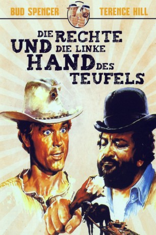

#4386 Die Rechte und die linke Hand des Teufels
Alternativ: They Call Me Trinity (Englischer Titel)
 
 IMDB-Wertung: 7.5 / 10
IMDB-Wertung: 7.5 / 10  Metascore: 0
Metascore: 0 
Niemand ist schneller mit dem Colt als der müde Joe, die rechte Hand des Teufels. Nur sein Pferde stehlender Bruder “der Kleine”, die berüchtigte linke Hand des Teufels, kann ihm das Wasser reichen. Doch der hat sich, nachdem ihm der Zufall einen Sheriffstern in die Hände gespielt hat, zur Abwechslung mal auf die Seite des Gesetzes geschlagen und lässt sich in einem kleinen Städtchen sein Amt versüßen. In diese Idylle verschlägt es auch den müden Joe, und nachdem die beiden Raufbolde einige kleine Familienstreitigkeiten handfest bereinigt haben, legen sie gemeinsam einem land- und geldgierigen Major das Handwerk.
Jahr: 1970
Dauer: 113 Minuten
FSK: 16
Land: Studio: Astro DistributionTonspuren:
Untertitel:
Auflösung: 1080p (1920x1080) Größe: 9441 MB
Genre: Komödie, Western
Regisseur: Enzo Barboni
Drehbuch: Dodie Smith
Soundtrack:
Darsteller:
 Terence Hill als Trinità
Terence Hill als Trinità Bud Spencer als Bambino
Bud Spencer als Bambino Farley Granger als Maj. Harriman
Farley Granger als Maj. Harriman Pietro Torrisi als Mexican Henchman , uncredited
Pietro Torrisi als Mexican Henchman , uncredited- Steffen Zacharias als Jonathan
- Dan Sturkie als Tobias
 Gisela Hahn als Sarah
Gisela Hahn als Sarah- Elena Pedemonte als Judith
- Ezio Marano als Frank Faina / Weasel
 Luciano Rossi als Timmy / Timid
Luciano Rossi als Timmy / Timid- Ugo Sasso als Sheriff Zoppo
- Remo Capitani als Mezcal
- Riccardo Pizzuti als Jeff
- Paolo Magalotti als Major Henchman
- Vito Gagliardi als
- Antonio Monselesan als Bounty Killer
- Gaetano Imbró als Blond Bounty Killer
- Franco Marletta als
- Luigi Bonos als Ozgur - Bartender
- Roberto Alessandri als Major Henchman , uncredited
- Artemio Antonini als Major Henchman , uncredited
- Fortunato Arena als Barman , uncredited
- Dominic Barto als Mortimer , uncredited
- Giancarlo Bastianoni als Major Henchman , uncredited
 Omero Capanna als Mezcal Henchman , uncredited
Omero Capanna als Mezcal Henchman , uncredited- Nazzareno Cardinali als Mormon , uncredited
- Angelo Casadei als Man in Saloon , uncredited
- Felice Ceciarelli als Mezcal Henchman , uncredited
- Michele Cimarosa als Drunken Mexican , uncredited
- Alberto Dell'Acqua als Mormon , uncredited
- Arnaldo Dell'Acqua als Brawler , uncredited
- Roberto Dell'Acqua als Brawler , uncredited
- Mario Dionisi als Brawler , uncredited
- Alberigo Donadeo als Mormon , uncredited
- Paolo Figlia als Major Henchman , uncredited
- Lorenzo Fineschi als Mormon , uncredited
- Augusto Funari als Mezcal Henchman , uncredited
- Mel Gaines als Duel-Wanting Man , uncredited
- Gilberto Galimberti als Major Henchman , uncredited
- Oscar Giustini als Brawler , uncredited
- Jess Hill als Mormon Baby , uncredited
- Alba Maiolini als Mormon , uncredited
 Emilio Messina als Brawler , uncredited
Emilio Messina als Brawler , uncredited- Osiride Pevarello als Gioele , uncredited
- Herman Reynoso als Mormon Brother Lookout , uncredited
- Thomas Rudy als Emiliano , uncredited
- Sergio Smacchi als Mezcal's Man , uncredited
- Sergio Testori als Mormon , uncredited
- Bruno Ukmar als Mexican Badman , uncredited
- Franco Ukmar als Mexican Badman , uncredited
Datei: X:\Person\Bud Spencer + Terence Hill\Rechte und die linke Hand des Teufels, Die (1970, FSK16, 1920x1080).mkv seit 13.09.2016
Festplatte: HD Collection-7+mehr(A-Z)+Person
 Es gibt insgesamt 43 Filme in der Gruppe 'Person\Bud Spencer + Terence Hill'
Es gibt insgesamt 43 Filme in der Gruppe 'Person\Bud Spencer + Terence Hill'